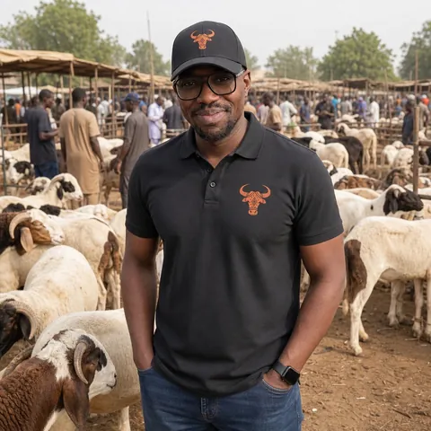

الجميع قال أن رقمنة تجارة الماشية في غرب أفريقيا مستحيلة. الأسواق غير رسمية جداً. الرعاة لا يستخدمون التطبيقات. الثقة لا يمكن إعادة إنتاجها.
كانوا مخطئين.
بالضمان، حتى تأكيدك.
لا زر شراء.
من السوق إلى الهاتف، والعكس.
الماشية هي العمود الفقري لاقتصاد وثقافة غرب أفريقيا. ملايين العائلات تعتمد عليها في معيشتها، وملايين أخرى تحتاجها للاحتفالات — الطبسقي، الأعراس، حفلات التسمية والوجبات اليومية. ومع ذلك، كل معاملة تطلبت دائماً قفزة إيمان.
غرابالي يبني طبقة الثقة التي لم تكن تجارة الماشية في أفريقيا تملكها قط — سوق حيث كل دفعة محمية بالضمان، وكل مفاوضة تتم كمحادثة، وسمعة كل تاجر تتبعه من السوق إلى الهاتف والعكس.
التجارة التقليدية
مع غرابالي
في تجارة الماشية بغرب أفريقيا، يحتاج المشترون للسفر لمسافات طويلة لفحص الحيوانات. المعاملات النقدية لا توفر حماية ضد الاحتيال. الوسطاء يضيفون تكاليف دون قيمة. ولا توجد طريقة موثوقة للتحقق من صحة الحيوان قبل الشراء.
في الوقت نفسه، المهجر — ملايين من سكان غرب أفريقيا في الخارج — ليس لديهم طريقة لشراء الماشية لعائلاتهم في الوطن. هذه العوائق تكلف المزارعين معيشتهم والمشترين أموالهم. غرابالي موجود لتغيير هذا.
كل معاملة علاقة. لم نتخطَّ المفاوضة — بل رقمناها.

من الماشية يعبر حدوداً واحدة على الأقل قبل الوصول لمشتريها. ليست نقرات — بل علاقات على آلاف الكيلومترات. (CILSS / OCDE)
كل معاملة في غرب أفريقيا هي علاقة. تسلّم. تسأل عن العائلة. تفحص. تعرض سعراً. يساومون. تتفقون. هذا ليس عائقاً — هذه ثقافة.
غرابالي لا يتخطى المفاوضة. نحن رقمناها. لأنك لا تستطيع رقمنة سوق دون احترام كيفية عمله فعلاً. الثقة لا تُبنى بزر شراء.
في غرب أفريقيا، حوالي ثلثي الماشية يعبر حدوداً واحدة على الأقل قبل الوصول للمشتري النهائي. هذا ليس تجارة إلكترونية. إنها علاقات تمتد لآلاف الكيلومترات. بنينا لهذا الواقع.

مختار كاني
لم أدرس سوق الماشية. عشته — من جوانبه الأربعة.
نشأت في القرى، عشت مع الرعاة — وعرفت خوف العودة والمال في الجيب.
كنت جزاراً وأنا تلميذ: ثقل السكين، عيد الأضحى من الفجر للغروب.
كنت أُرسَل للبحث عن الحيوان المناسب بالسعر المناسب — الانتظار تحت الشمس، والعودة خالي الوفاض.
اليوم بعيداً: أرسل كبشاً دون أن أكون هناك، أتصل ثلاث مرات «هل تمّ؟»
«غرابالي لم يولد في مكتب. وُلد من كل هذا.»
نشأت في ريف مالي. ليس في باماكو — في القرى. كينينكون. بورامابوغو. كل أسبوع، كنت أرافق العائلات إلى السوق الأسبوعي. عشت مع الرعاة. ساعدت في رعاية قطعانهم. رأيت ما يكلفه المشي لأيام للوصول إلى سوق الماشية — وأعرف خوف العودة، حين تكون قد بعت وكل أموالك في جيبك، على طريق يعرف فيه الجميع ذلك.
حين كنت تلميذًا، عملت جزارًا لكسب عيشي. أعرف ثقل السكين، ودقة القطع، والفرق بين عمل نظيف وعمل رديء. أعرف أنه خلال عيد الأضحى، يعمل الجزار من الفجر حتى الغروب وكل عائلة تعتمد عليه. وأعرف أيضًا أنه بقية العام، نفس الجزار ينتظر — لأنه لا توجد طريقة ليُعرف خارج حيّه.
كنت أُرسَل أيضًا للبحث عن الماشية — رحلات طويلة، عبر أسواق متعددة، بحثًا عن الحيوان المناسب بالسعر المناسب. عرفت الانتظار تحت الشمس، والأسواق التي لا يوجد فيها شيء جيد، والعودة خالي الوفاض، والارتياح حين تجد أخيرًا والسعر يصمد.
اليوم، أعيش في المهجر. ومثل ملايين غيري، حين يأتي عيد الأضحى، حين يكون هناك عقيقة، زفاف، عزاء — أريد أن أرسل كبشًا لعائلتي. من بعيد. دون أن أكون هناك. أتصل ثلاث مرات لأسأل: « هل تمّ؟ هل كان جيدًا؟ »
كنت راعيًا. كنت جزارًا. كنت مشتريًا. أنا مغترب. غرابالي لم يولد في مكتب. وُلد من كل هذا.
في مارس 2026، أسست غرابالي في باماكو، مسجلة في السجل التجاري وسجل الائتمان المنقول (RCCM) في مالي. بهذا التسجيل، دمجنا خدمات الأموال عبر الهاتف المحمول وبنينا أسس شركة حقيقية، وفق القواعد.
التزامي بسيط: كل ميزة في غرابالي يتم اختبارها من قبل بائعين حقيقيين في أسواق حقيقية. كل فرنك CFA محمي بنظام الضمان. وكل قرار يُتخذ من شخص عاش على جانبَي السوق. بُني هنا، من أجل هنا.
كل ميزة تبدأ بسؤال: هل هذا يجعل المعاملة أكثر موثوقية؟
واجهة كاملة بالفرنسية والإنجليزية والعربية (RTL) — مراجعات صوتية بأي لغة.
الضمان يحفظ أموالك حتى تُدخل رمز التأكيد — لا شيء قبله.
مصمَّم للهاتف أولاً — نطاق ترددي منخفض، بديهي.
نتعاون مع الأطباء البيطريين للشهادات الصحية قبل البيع.
محفظة كاملة — إيداعات، تحويلات، mobile money — لإدخال التجار للاقتصاد الرقمي.
أيضاً من لندن ونيويورك وبروكسل ومونتريال…
يعيش ملايين من أبناء غرب إفريقيا في الخارج — في باريس ولندن ونيويورك وواشنطن وبروكسل ومونتريال. يريدون إرسال الماشية إلى الوطن لأجل تباسكي والأعراس والعقيقة والمآتم، أو ببساطة لرعاية عائلاتهم.
تجعل غرابالي ذلك ممكناً — تصفّح ماشية موثَّقة من أي مكان في العالم، وفاوض البائعين المحليين، وادفع بعملتك (EUR وUSD وGBP و135+ عملة عبر Stripe) مع حماية الضمان، واحصل على التوصيل مباشرة إلى منزل عائلتك. والتتبّع الفوري للطلب يعني أنك تعرف بالضبط متى تصل الفرحة.
خلف واجهة بسيطة، بنية تحتية مصمَّمة للأمان والسرعة والتوسّع.
كل دفعة محمية، كل فرنك متتبَّع، تُحرَّر عند رمزك.
محادثة، صوت، قائمة انتظار دون اتصال — حتى بنطاق منخفض.
إشعارات فورية وتنبيهات داخل التطبيق، بروابط مباشرة لطلباتك ومحفظتك.
التحقق من الجهاز، رمز تأكيد مشفّر، مراقبة أمنية.
لا يبيع أي راعٍ بخوف.
لا يدفع أي مشترٍ بعمى.
لا تنتظر أي عائلة بدون إثبات.
من تجارة الماشية في غرب أفريقيا سنوياً، تدعم نحو 20 مليون راعٍ (البنك الدولي، 2024). البنية التي تربطهم لم تكن موجودة قط. نحن نبنيها.
ماشيتك. أموالك. ثقتك.
نرى قارة لا يبيع فيها أي راعٍ بخوف، ولا يدفع أي مشترٍ بعمى، ولا تنتظر أي عائلة بدون إثبات.
تتجاوز تجارة الماشية في غرب أفريقيا مليار دولار سنوياً. عبر الساحل وغرب أفريقيا الساحلي، تُعدّ تربية الماشية ركيزة لسُبل عيش واحتفالات وأمن غذائي لمئات الملايين من الناس — بمن فيهم نحو 20 مليون راعٍ (البنك الدولي، 2024). ومع ذلك، فإن البنية التحتية التي تربط الرعاة بالمشترين، والعرض الريفي بالطلب الحضري، ورؤوس أموال المهجر بالأسواق المحلية لم تكن موجودة قط. بدأنا في مالي ونتوسع عبر المنطقة لأن الفجوة لا يمكن إنكارها والطلب موجود بالفعل.
نحن لا نستبدل كيف تعمل التجارة. نحن نجعلها جديرة بالثقة.
مشترون، بائعون، مقدمو خدمات، مهجر — تجارة الماشية تدخل حقبة جديدة.
تحميل التطبيقمعاينة عبر Expo Go · قريباً على App Store وGoogle Play